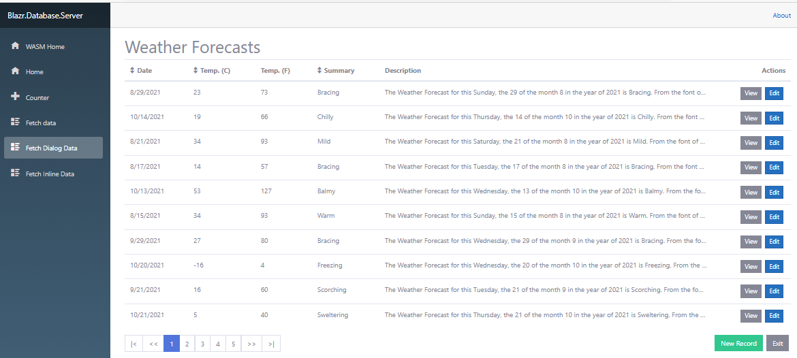
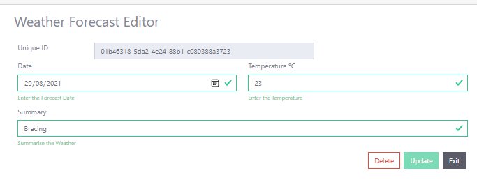
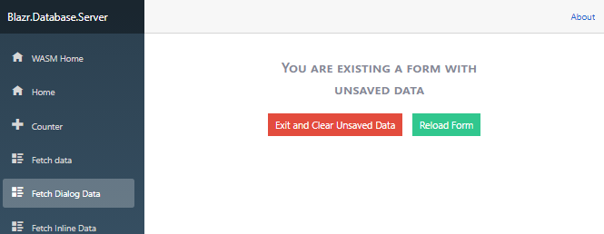

Table of Contents
Building Edit and View UI Components
Document List
This is the third in a series of articles looking at how to build and structure a Database Application in Blazor. The articles so far are:
- Project Structure and Framework.
- Services - Building the CRUD Data Layers.
- View Components - CRUD Edit and View Operations in the UI.
- UI Components - Building HTML/CSS Controls.
- View Components - CRUD List Operations in the UI.
This article looks in detail at building reusable CRUD presentation layer components, specifically Edit and View functionality. There are significant changes since the first release.
I find it interesting that most programmers try and automate Edit And View forms by building a control factory rather than boilerplating everything else. Most forms are unique to their record set. Certain fields can be grouped together and put on the same line. Text fields change in length depending on how many characters they need. Building a factory to handle this, plus the added complication of linkages between the control, the dataclass instance and validation, doesn't seem worth it. The configuration dataset becomes more complicated than the form it's trying to mimic. For those reasons there's no form factory here, just a set of libary UI component classes to standardise form building.
Sample Project, Code and Demo Site
The repository for the articles has moved to Blazor.Database Repository. All previous repos are obselete and will be removed shortly.
There's a SQL script in /SQL in the repository for building the database.
The demo site has changed now the Server and WASM have been combined. The site starts in Server mode - https://cec-blazor-database.azurewebsites.net/.
The List Form

The Modal Viewer

The Inline Editor

Edit State Control

Several custom controls are used in the forms. The detail on these is covered in separate articles:
Code Project Articles:
This Repo Originals:
The Base Forms
All Razor based UI components inherit from ComponentBase unless otherwise specified. All source files can be viewed on the Github site, and I include references or links to specific code files at appropriate places in the article. In most places you need to read through the code for detailed commentary on functionality.
RecordFormBase
RecordFormBase is the base abstract class used by the record forms. It inherits from ComponentBase. Instances of Record Forms can exist in several UI contexts:
- As the root component in a RouteView, where the RouteView passes the form the
Idvia a Parameter. - Within a modal dialog in a list or other component. The ID is passed to the form through a
DialogOptionsclass. - As an inline editor within another component such as a list, where the component passes the form the
Idvia a Parameter.
RecordFormBase detects if it is within a modal dialog context by checking for a cascaded IModalDialog object. There are two sets of dependancies:
- The
Idof the record. This is either passed as aParameterif the form is hosted in a RouteView or other component, or in a publicModalOptionsproperty ofIModalDialog. - The Exit mechanism. The form exits by either:
- Calling close on
Modalif it's in a modal context. - Calling the
ExitActiondelegate if one if registered. - The default - exit to the site root.
- Calling close on
Namespace : Razr.SPA.Components
// Namespace: *Razr.SPA.Components* // Domain: UI Domain // File: Blazr.SPA/Forms/RecordFormBase.cs public abstract class RecordFormBase<TRecord> : ComponentBase where TRecord : class, IDbRecord<TRecord>, new() { [CascadingParameter] public IModalDialog Modal { get; set; } [Parameter] public Guid ID { get; set; } = Guid.Empty; [Parameter] public EventCallback ExitAction { get; set; } [Inject] protected NavigationManager NavManager { get; set; } protected IModelViewService<TRecord> Service { get; set; } protected virtual bool IsLoaded => this.Service != null && this.Service.Record != null; protected virtual ComponentState LoadState => IsLoaded ? ComponentState.Loaded : ComponentState.Loading; protected virtual bool HasServices => this.Service != null; protected bool IsModal => this.Modal != null; protected Guid _modalId { get; set; } = Guid.Empty; protected Guid _Id => TryGetModalID() ? _modalId : this.ID; protected async override Task OnInitializedAsync() { // Get the record await LoadRecordAsync(); await base.OnInitializedAsync(); } protected virtual async Task LoadRecordAsync() => await this.Service.GetRecordAsync(this._Id); protected virtual bool TryGetModalID() { if (this.IsModal && this.Modal.Options.TryGet<Guid>("Id", out Guid value)) { this._modalId = value; return true; } return false; } protected virtual async Task Exit() { // If we're in a modal context, call Close on the cascaded Modal object if (this.IsModal) this.Modal.Close(ModalResult.OK()); // If there's a delegate registered on the ExitAction, execute it. else if (ExitAction.HasDelegate) await ExitAction.InvokeAsync(); // else fallback action is to navigate to root else this.NavManager.NavigateTo("/"); } }
EditRecordFormBase
EditRecordFormBase is the base editor form. It inherits from RecordFormBase and implements editing functionality. TEditRecord is the editable class for TRecord.
It:
- Creates an instance of
TEditRecordcaledModeland populates it fromTRecord. - Retrieves the dirty dataset from
EditStateServiceif one exists. - Assigns the
TEditRecordto theEditContextand manages theEditContext. - Has a set of Boolean Properties to track state and manage button display/disabled state.
- Saves the record.
The form "locks" the browser page when the form is dirty.
// Namespace: *Razr.SPA.Components* // Domain: UI Domain // File: Blazr.SPA/Forms/EditRecordFormBase.cs public abstract class EditRecordFormBase<TRecord, TEditRecord> : RecordFormBase<TRecord>, IDisposable where TRecord : class, IDbRecord<TRecord>, new() where TEditRecord : class, IEditRecord<TRecord>, new() { [Inject] private IJSRuntime _js { get; set; } [Inject] protected EditStateService EditStateService { get; set; } protected EditContext EditContext { get; set; } protected bool IsDirty => this.EditStateService.IsDirty; protected virtual string FormUrl { get; set; } protected TEditRecord Model { get; set; } // Set of boolean properties/fields used in the razor code and methods to track // state in the form or disable/show/hide buttons. protected bool _isNew => this.Service?.IsNewRecord ?? true; protected bool _isValid { get; set; } = true; protected bool _saveDisabled => !this.IsDirty || !this._isValid; protected bool _deleteDisabled => this._isNew || this._confirmDelete || this.IsDirty; protected bool _isLoaded { get; set; } = false; protected bool _dirtyExit => this.IsDirty; protected bool _confirmDelete { get; set; } = false; protected bool _isInlineDirty => (!this.IsModal) && this.IsDirty; protected string _saveButtonText => this._isNew ? "Save" : "Update"; protected override ComponentState LoadState => _isLoaded ? ComponentState.Loaded : ComponentState.Loading; protected override async Task LoadRecordAsync() { _isLoaded = false; // Get the ID either from a ModalDialog Options or the Id Parameter and set the local id var id = this._Id; // Check if we have a dirty form reload and if so get the Id from the EditStateService if (this.EditStateService.IsDirty) id = (Guid)this.EditStateService.RecordID; // Get the record await this.Service.GetRecordAsync(id); // Get a new Edit class instance, populate it from the record and assign it to the EditContext this.Model = new TEditRecord(); this.Model.Populate(this.Service.Record); this.EditContext = new EditContext(this.Model); // Set up the EditStateService FirmUrl and Record Id this.EditStateService.EditFormUrl = FormUrl ?? NavManager.Uri; this.EditStateService.RecordID = id; _isLoaded = true; // wire up the events this.EditContext.OnFieldChanged += FieldChanged; this.EditStateService.EditStateChanged += OnEditStateChanged; // if we have a dirty record or are editing an existing record, run validation if (!this._isNew) this.EditContext.Validate(); } protected void FieldChanged(object sender, FieldChangedEventArgs e) => this._confirmDelete = false; private void OnEditStateChanged(object sender, EditStateEventArgs e) { if (this.IsModal) this.Modal.Lock(e.IsDirty); this.InvokeAsync(StateHasChanged); } protected void ValidStateChanged(bool valid) => this._isValid = valid; protected async Task HandleValidSubmit() { // Get the readonly record to submit var rec = this.Model.GetRecord(); // Save the record await this.Service.SaveRecordAsync(rec); // Update the EditStateService to clean this.EditStateService.NotifyRecordSaved(); // Render the component await this.InvokeAsync(this.StateHasChanged); } protected void ResetToRecord() => this.Model.Populate(this.Service.Record); protected void Delete() { if (!this._isNew) this._confirmDelete = true; } protected async Task ConfirmDelete() { if (this._confirmDelete) { await this.Service.DeleteRecordAsync(); await this.DoExit(); } } protected async Task ConfirmExit() { this.EditStateService.ResetEditState(); this.SetPageExitCheck(false); await this.DoExit(); } protected async Task DoExit(ModalResult result = null) { result ??= ModalResult.OK(); if (this.IsModal) this.Modal.Close(result); if (ExitAction.HasDelegate) await ExitAction.InvokeAsync(); else this.NavManager.NavigateTo("/"); } private void SetPageExitCheck(bool action) => _js.InvokeAsync<bool>("cecblazor_setEditorExitCheck", action); public void Dispose() { if (this.EditContext != null) this.EditContext.OnFieldChanged -= FieldChanged; } }
Edit State Management
The Edit state is managed through three classes:
EditStateService- a scoped State Service to hold information about a dirty form.EditFormState- a component within theEditFormComponent that tracks the state of the fields within theEditContextmodel class and maintains the state ofEditStateService. On initialization it reloads any dirty data stored inEditStateService.RouteViewManager- a replace component forRouteViewinApp. It injectsEditStateServiceand loads a custom "Are You Sure You want to Exit the Form" form ifEditStateServicehas a dirty form.
There's also a Js script that's loaded in the base page site.js.
// File: Blazr.SPA/wwwroot/site.js window.cecblazor_setEditorExitCheck = function (show) { if (show) { window.addEventListener("beforeunload", cecblazor_showExitDialog); } else { window.removeEventListener("beforeunload", cecblazor_showExitDialog); } } window.cecblazor_showExitDialog = function (event) { event.preventDefault(); event.returnValue = "There are unsaved changes on this page. Do you want to leave?"; }
You can see the C# interface method in EditRecordFormBase above and being called in ConfirmExit.
protected async Task ConfirmExit() { this.EditStateService.ResetEditState(); this.SetPageExitCheck(false); await this.DoExit(); } private void SetPageExitCheck(bool action) => _js.InvokeAsync<bool>("cecblazor_setEditorExitCheck", action);
Implementing Forms
WeatherForecastViewerForm
The code for the WeatherForecastViewerForm is pretty simple.
- Inherit from
RecordFormBaseand setTRecordasWeatherForecast. - Get the
WeatherForecastViewServiceand assign it to the baseServiceproperty.
public partial class WeatherForecastViewerForm : RecordFormBase<WeatherForecast> { [Inject] private WeatherForecastViewService ViewService { get; set; } protected async override Task OnInitializedAsync() { this.Service = this.ViewService; await base.OnInitializedAsync(); } }
The majority of the code is component markup in the Razor file.
- There's no Html code, it's all components. We'll look at UI components in detail on the next article.
- The layout is based on Bootstrap grids.
- Column size dictated control size.
UILoaderonly loads it's content when we have a record to display.
@namespace Blazr.Database.Forms @inherits RecordFormBase<WeatherForecast> <UIContainer> <UIFormRow> <UIColumn> <h2>Weather Forecast Viewer</h2> </UIColumn> </UIFormRow> </UIContainer> <UILoader State="this.LoadState"> <UIContainer> <FormViewControl Label="Date" Value="@this.ViewService.Record.Date.LocalDateTime.ToShortDateString()" IsRow="true" ControlCols="7" /> <FormViewControl Label="Temperature °C" Value="@this.ViewService.Record.TemperatureC.ToString()" IsRow="true" ControlCols="7" /> <FormViewControl Label="Temperature °F" Value="@this.ViewService.Record.TemperatureF.ToString()" IsRow="true" ControlCols="7" /> <FormViewControl Label="Summary" Value="@this.ViewService.Record.Summary" IsRow="true" ControlCols="7" /> </UIContainer> </UILoader> <UIContainer> <UIFormRow> <UIButtonColumn> <UIButton type="button" class="btn-secondary" ClickEvent="this.Exit">Exit</UIButton> </UIButtonColumn> </UIFormRow> </UIContainer>
WeatherForecastEditorForm
WeatherForecastEditorForm is similar to WeatherForecastViewerForm.
The code is again pretty simple.
- Inherit from
EditRecordFormBaseand setTRecordasWeatherForecastandTEditRecordasEditWeatherForecast. - Get the
WeatherForecastViewServiceand assign it to the baseServiceproperty.
public partial class WeatherForecastEditorForm : EditRecordFormBase<WeatherForecast, EditWeatherForecast> { [Inject] private WeatherForecastViewService ViewService { get; set; } protected async override Task OnInitializedAsync() { //this.FormUrl = "/Weather/Edit"; this.Service = ViewService; await LoadRecordAsync(); } }
The Razor file is shown below. It's based on the standard Blazor EditForm with some additional controls. The same comments made on the Viewer apply here. In addition:
InlineDialogis a form locking control. It's enabled by the_isInlineDirtyproperty. Go to the demo site and edit a record to see it in action. It's only enabled when the form isn't in a modal context.EditFormStateis the control that tracks the form edit state. It links withInlineDialogto control form locking.ValidationFormStateis a custom validation control.- The buttons are tied to the boolean control properties to manage their state.
The custom controls are covered in separate articles referenced in the Links section.
@namespace Blazr.Database.Forms @inherits EditRecordFormBase<WeatherForecast, EditWeatherForecast> <InlineDialog Lock="this._isInlineDirty" Transparent="false"> <FormViewTitle> <h2>Weather Forecast Editor</h2> </FormViewTitle> <UILoader State="this.LoadState"> <EditForm EditContext="this.EditContext" OnValidSubmit="HandleValidSubmit" class=" px-2 py-3"> <EditFormState/> <ValidationFormState ValidStateChanged="this.ValidStateChanged"></ValidationFormState> <UIContainer> <FormViewRow Title="Unique ID" Value="@this.Model.ID.ToString()" /> <UIFormRow> <UIColumn MediumColumns="6" Columns=12> <FormEditControl Label="Date" ShowLabel="true" @bind-Value="this.Model.Date" ControlType="typeof(InputDate<DateTimeOffset>)" IsRequired="true" ShowValidation="true" HelperText="Enter the Forecast Date"></FormEditControl> </UIColumn> <UIColumn MediumColumns="6" Columns=12> <FormEditControl Label="Temperature °C" ShowLabel="true" @bind-Value="this.Model.TemperatureC" ControlType="typeof(InputNumber<int>)" IsRequired="true" ShowValidation="true" HelperText="Enter the Temperature"></FormEditControl> </UIColumn> </UIFormRow> <UIFormRow> <UIColumn MediumColumns="12" Columns=12> <FormEditControl Label="Summary" ShowLabel="true" @bind-Value="this.Model.Summary" IsRequired="true" ShowValidation="true" HelperText="Summarise the Weather"></FormEditControl> </UIColumn> </UIFormRow> </UIContainer> <FormEditButtons ContainerSize="BootstrapSize.XLarge"> <UIButton type="button" Show="true" Disabled="this._deleteDisabled" class="btn-outline-danger" ClickEvent="() => Delete()">Delete</UIButton> <UIButton type="button" Show="this._confirmDelete" class="btn-danger" ClickEvent="() => this.ConfirmDelete()">Confirm Delete</UIButton> <UIButton type="button" Show="this.IsDirty" class="btn-outline-warning" ClickEvent="() => this.ResetToRecord()">Reset</UIButton> <UIButton type="submit" Show="true" Disabled="this._saveDisabled" class="btn-success">@this._saveButtonText</UIButton> <UIButton type="button" Show="this.IsDirty" class="btn-danger" ClickEvent="() => this.ConfirmExit()">Exit Without Saving</UIButton> <UIButton type="button" Show="!this.IsDirty" class="btn-dark" ClickEvent="() => this.Exit()">Exit</UIButton> </FormEditButtons> </EditForm> </UILoader> </InlineDialog>
RouteView Implementations
The RouteView implementation of the viewer is shown below.
- Declares the
Routewith an IDParameter. - Declares the form
WeatherForecastViewerForm. - Passes the
IDto the form and attaches a delegate toExitActionwhich returns to the fetchdata view.
// WeatherViewer.razor
@page "/weather/view/{ID:guid}"
@namespace Blazr.Database.RouteViews
<WeatherForecastViewerForm ID="this.ID" ExitAction="this.ExitToList"></WeatherForecastViewerForm>
@code {
[Parameter] public Guid ID { get; set; }
[Inject] public NavigationManager NavManager { get; set; }
private void ExitToList()
=> this.NavManager.NavigateTo("/fetchdata");
}
The editor is exactly the same, but declares the form WeatherForecastEditorForm.
// WeatherEditor.razor
@page "/weather/edit/{ID:guid}"
@namespace Blazr.Database.RouteViews
<WeatherForecastEditorForm ID="this.ID" ExitAction="this.ExitToList"></WeatherForecastEditorForm>
@code {
[Parameter] public Guid ID { get; set; }
[Inject] public NavigationManager NavManager { get; set; }
private void ExitToList()
=> this.NavManager.NavigateTo("/fetchdata");
}
Wrap Up
That wraps up this article. We've shown how to build boilerplate code into base forms and how to implement viewer and editor forms. We'll look in more detail at the list forms and how the viewer and editors are called in a separate article.
Some key points to note:
- The Blazor Server and Blazor WASM code is the same.
- Almost all the functionality is implemented in library components. Most of the application code is Razor markup for the individual record fields.
- The Razor files contains controls, not HTML.
- Async in used through.
If you're reading this article in the future, check the readme in the repository for the latest version of the article set.
History
- 19-Sep-2020: Initial version.
- 17-Nov-2020: Major Blazor.CEC library changes. Change to ViewManager from Router and new Component base implementation.
- 29-Mar-2021: Major updates to Services, project structure and data editing.
- 24-June-2021: revisions to data layers.
- 06-Aug-2012: revisions to reflect the project and library remodelling to the domain model.